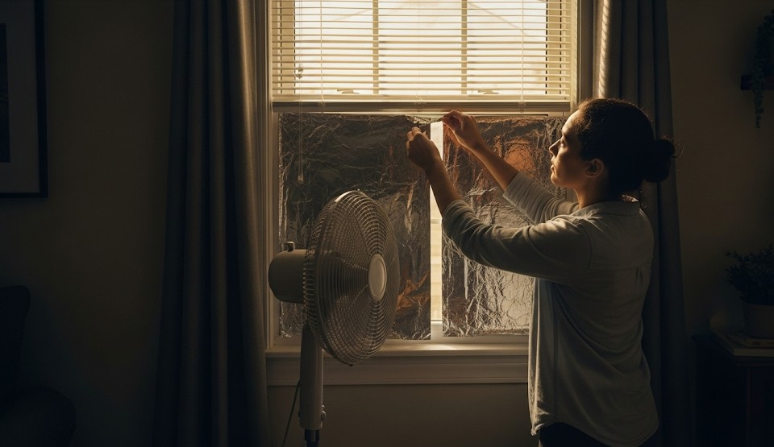

Keeping Cool Without Air Conditioning
Objective
Reduce heat stress in apartments/homes when AC is out using passive measures and smart scheduling.
Home Cooling
- Close blinds/curtains on sun‑facing windows; reflective foil if available.
- Cross‑ventilate at night; close up by 9 a.m.
- DIY evaporative cooler: wet towel in front of a fan (dry climates only).
Hydration & Rest
- 0.5–1.0 L/hour during hottest periods with electrolytes.
- Sleep low; move bedding to the coolest room.
Body Cooling
- Cool pulse points: neck, wrists, groin, behind knees.
- Cool showers before bed; light clothing.
Real Example
Family converted a north‑facing room into a sleep bunker and used nightly cross‑breezes to drop temp by 4–6°C.
Checklist
- Fans, blackout curtains
- Ice packs or frozen bottles
- Electrolyte packets
Contingencies
- High humidity → skip evaporative methods; prioritize fans and shade.
- Health risk signs → dizziness, confusion → seek cooler shelter.
After‑Action
Add reflective film and schedule nightly cooling routines during heat season.
← Previous | All Articles | Next →